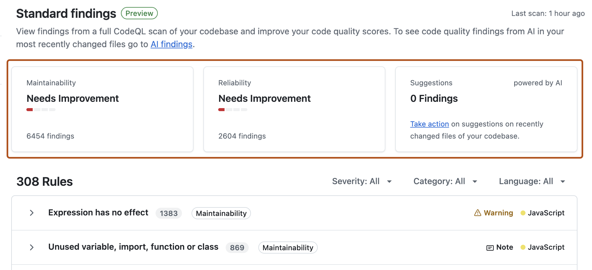
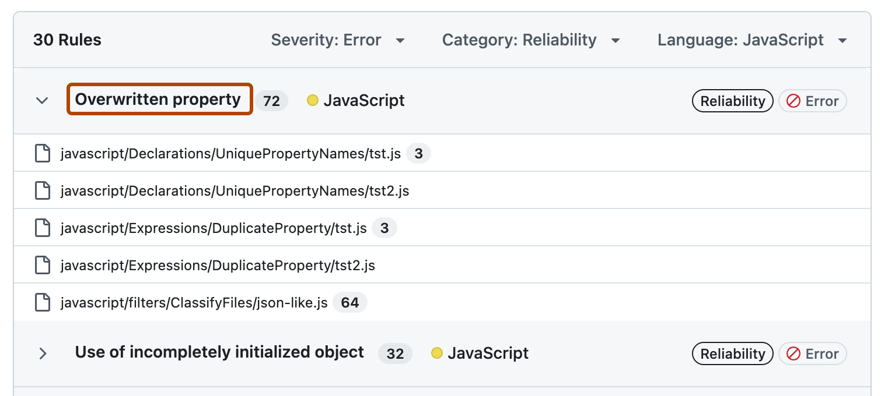

Interpreting the code quality results for your repository
View GitHub Code Quality findings for your default branch.
Note
GitHub Code Quality is currently in public preview and subject to change.
During public preview, Code Quality will not be billed, although Code Quality scans will consume GitHub Actions minutes.
The "Standard findings" dashboard shows all the results found by CodeQL analysis on the default branch of your repository. This view helps you visualize the full backlog of quality results and prioritize work to fix specific types of problems.
The overview, at the top of the page, summarizes the maintainability and reliability of the codebase.

Underneath the overview, the full list of results is shown with a header with filters that you can use to focus on a specific set of findings. The results are:
Grouped by the rule that detected each finding
Within each rule, ordered by file path alphabetically
Explore the results by expanding a rule to list the affected files and clicking on the name of a rule to see full details of the findings.

Interpreting ratings and metrics
Code quality results should always be interpreted in the context of your repository. For example:
Small repositories, or repositories with only a small amount of code written in supported languages, tend to have few results and good ratings.
Repositories with a lot of generated code may have many maintenance results, lowering the rating for maintainability. This is not a problem if the source code itself is maintainable.
Large repositories with a lot of code in a fully supported language often have many results even if the majority of the code has good maintainability and reliability standards.
After code coverage is configured for your repository, the github-code-quality[bot] posts a coverage summary comment on each pull request. The comment includes:
Branch-vs-default-branch comparison: The aggregate coverage percentage for the pull request branch and the default branch (for example, "65% on pull request branch, 44% on default branch").
Most impacted files: The 10 files with the largest coverage changes between the default branch and the pull request branch. This list may include files not directly modified in the pull request. New or modified files are ranked above deleted files. Within each group, files are sorted by the absolute change in line coverage weighted by the number of lines in the file, with coverage magnitude and then filename as tiebreakers.
Per-file breakdown: An expandable section listing each file with its coverage percentage and delta value. A positive delta means the file gained coverage on this branch. A negative delta indicates coverage decreased, which may signal untested code paths introduced by the change.
Use the coverage summary to identify files with low or declining coverage and prioritize review attention on untested changes.